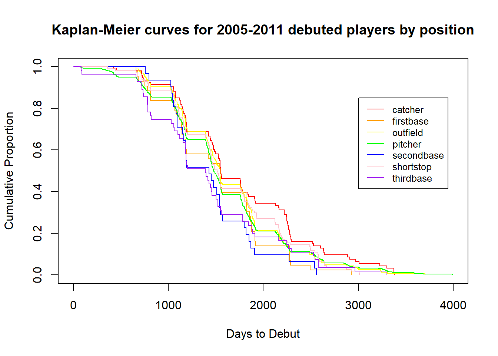
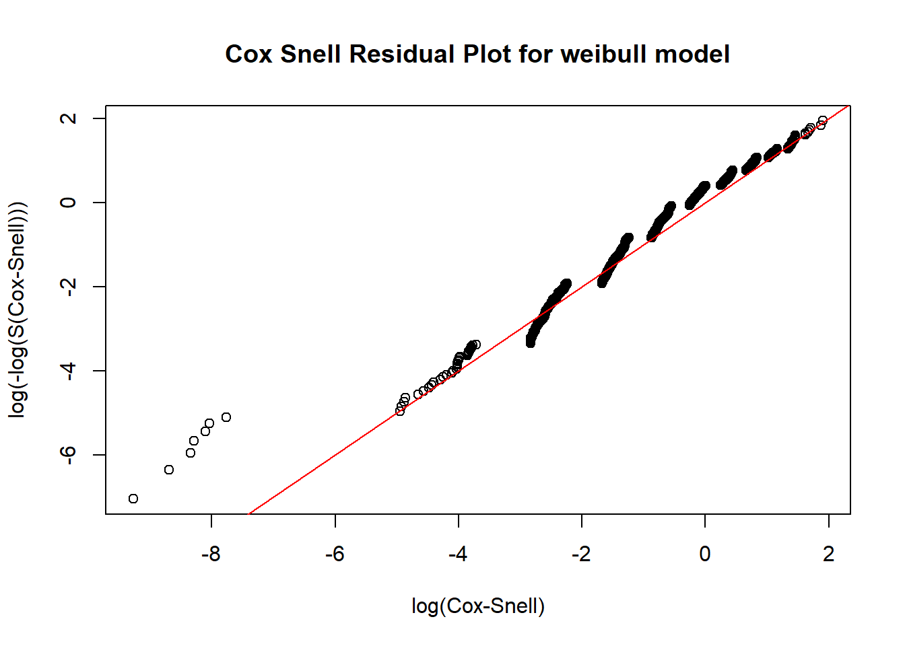

3 Models
3.1 Kaplan Meier Curves
3.2 Logistic Regression Model
As a result of deciding that the censoring method would not work as a proper analysis for our question, we proceeded with the two step model. The first step of this model seeks to demonstrate a player’s probability of debuting in the major leagues based off of their position; whether they bat right handed, left handed, or as a switch hitter; and whether they were drafted in high school or college. Using the 16,727 draftees between 2005 and 2019, we were able to create the following logistic regression model.
\[\log(\mathrm{Odds}[\mathrm{playing in MLB} \mid \mathrm{position}, \mathrm{battingStance}, \mathrm{highSchool}]) = 0.117 + 0.958 \mathrm{HSdraftee}\\ + 0.82 \mathrm{batsRight} + 1.009 \mathrm{batsSwitch} + 1.375 \mathrm{pitcher} + 1.068 \mathrm{firstbase} + 0.851 \mathrm{secondbase}\\ + 1.406 \mathrm{shortstop} + 1.156 \mathrm{thirdbase} + 0.9 \mathrm{outfield}\]
This model has three significant variables - the right handed batting stance, the pitcher position, and the shortstop position. We can say with 95% confidence that the odds of a right handed batter making their big league debut holding position and whether they were drafted in high school or college constant are between 0.737 and 0.913 times lower than an left handed batter that is drafted. From our model, we also learn that outfielders and second basemen that are drafted tend to have the lowest odds of making their debut holding batting hand and whether they were drafted in high school or college constant. These variables are not significant, however, as the confidence interval representing their slope includes 1. On the other hand, the variables representing shortstops and pitchers are significant. With 95% confidence, we can say drafted pitchers have between 1.148 and 1.657 times the odds of making their major league debut compared to drafted catchers, and drafted shortstops have between 1.116 to 1.774 times the odds compared to drafted catchers (all holding batting hand and high school versus college draft status constant).
With this model that accounts for all players drafted, we do not have evidence to conclude that high school draftees have a significantly lower probability of debuting than college draftees, as one might expect. However, in addition to this model we decided to create another logistic regression model for predicting whether or not a player will make their debut that only includes players that officially signed with a major league team and uses the same predictor variables. This model is based off of 2228 high school draftees that signed and 11,486 college draftees that signed, and the result is shown below:
\[\log(\mathrm{Odds}[\mathrm{playing in MLB given signed} \mid \mathrm{position}, \mathrm{battingStance}, \mathrm{highSchool}]) = 0.134\\ + 1.64 \mathrm{HSdraftee} + 0.808 \mathrm{batsRight} + 0.918 \mathrm{batsSwitch} + 1.314 \mathrm{pitcher} + 0.991 \mathrm{firstbase}\\ + 0.822 \mathrm{secondbase} + 1.283 \mathrm{shortstop} + 1.14 \mathrm{thirdbase} + 0.84 \mathrm{outfield}\]
As we can see from this model, being a signed player drafted in high school significantly increases a player’s odds of making their major league debut compared to a signed college player, as the 95% confidence interval represents a 1.45 to 1.859 increase in odds. This is much different than what we found when looking at all drafted players. Similar to the earlier model, the right handed batting predictor variable is significant - a signed player batting right handed has 0.722 to 0.903 times the odds of making their major league debut compared to left handed batters. The shortstop and pitcher positions are no longer significant variables.
3.3 Weibull Parametric Model for draft to debut times
In addition to modeling the draft to debut times with the Kaplan-Meier curve, we also decided to use a parametric model. Unlike Kaplan-Meier curves, parametric models make certain assumptions about the distribution of the data. A benefit of parametric models is that you get smoother curves that have equations which allow you to estimate risk at certain time points and more easily compare groups within data.
Cox-Snell residual plots are one way to determine how good a parametric distribution is for what you are trying to model. If the plotted points appear linear with a slope of one, the model is likely a pretty good fit. We compared exponential, log-normal, normal, and weibull parametric models using Cox-Snell residual plots and found the weibull model to best fit our data, as seen by how closely our transformed data points fit the linear line.
After determining that the weibull distribution is the best way to model our time to debut data, we also assessed which variables to include as explanatory covariates in our model using a Likelihood-Ratio Test (LRT) and Akaike’s Information Criterion (AIC). These tests carry out a procedure of formal hypothesis testing to evaluate how well the model fits the data. When analyzing the distribution of time to debut data using only players that debuted between 2005-2011, we found the weibull model using predictors of position and whether the player was drafted in college or high school to be the best model. With Akaike’s Information Criterion we received very similar results, however, this test concluded that the weibull model that also includes batting hand (left/right/switch hitter) as a predictor was the best model. The reason that these two formal tests differ slightly with the same data is that the AIC does not penalize models with more covariates quite as much as the LRT. We used the AIC equation AIC=2P-2L, where P represents the number of parameters in the model and L represents the log-likelihood of the model. When comparing models, the model with the lower AIC is better. Therefore, we could increase the degree to which the AIC penalizes larger models to better match the amount that the LRT penalizes additional parameters by increasing the P coefficient.
When selecting our model, we ultimately decided that we were fine with the extra parameter of batting hand and used the weibull model with covariates of batting hand, position, and whether the player was drafted in high school or college. The weibull curves using the data on players debuting from 2005-2011 are shown below:
Similar to the Kaplan-Meier curves, the survival curve for high school players is above that of college players, indicating that high school draftees typically take longer to debut after being drafted. More specifically, the weibull model gives a mean time to debut of 1720.725 days (4.7 years) for college players and 2118.939 days (5.8 years) for high school players. These times to debut are slightly longer than those found by the Kaplan-Meier curves, but the message is the same - high school draftees will take about a year longer to debut after being drafted than college players.
3.4 An analysis comparing debut likelihood using hazard functions and a Cox PH model
In addition to looking at Kaplan-Meier and parametric survival curves, we also created hazard functions in order to investigate how the time to debut differs between high school and college players and at different positions. In survival analysis, a hazard function gives the risk of failure at a certain moment given that failure has not yet occurred. In our analysis, that “failure” is actually the success of a player making their major league debut. We used log-normal hazard functions to model the difference in the likelihood of a high school versus college draftee making their debut at any given time point because log-normal hazard functions are flexible in that they are able to be non-monotone in shape. The hazard plot is shown below: 
We see from this hazard plot that the college draftee hazard curve lies above the high school draftee curve, meaning that the college players are more likely to make their debut at any given time. Taking the the ratio of the curves at a given time represents how much more likely college players are to debut at that time in comparison to high school draftees - for example, at 1500 days (4.1 years), we can approximate that a college draftee is about 1.6875x more likely to make their debut that day than a high school draftee if they have not already debuted. We can see that from the curves the ratio starts out small then grows larger (at around 1000 days college draftees are about 2x as likely as high school draftees to make their debut on a given day), then decreases again. We can exponentiate the high school coefficient of the hazard function to find on average how much more likely a college draftee is to make their debut than the high school draftee across all times, and get 1.369. However, we should take this with a grain of salt. A problem with these hazard functions is that they tend to become more inaccurate sometime after the 1500 day mark. The curves will never meet/cross, implying that college players are always more likely to debut than high school players. However, we know this is not true. From our logistic regression model based on over 16,000 draftees, we saw there was no significant difference in the probability of a college draftee making it into the MLB compared to a high school draftee.
One way to solve this situation and better assess the difference in “risk” of a debut at any given time was to fit a Cox PH model for the data and then look at the plot of the hazard ratio overtime that is true to the data (no assumptions are being made like with the log-normal hazard functions). This plot is shown below:

We interpret this plot by look at the beta(t) for the high school covariate overtime. For example, at around 1200 days after a player is drafted, beta(t) = -0.5. We interpret this by taking 1/exp(-0.5) and get 1.649, meaning that at 1500 days we estimate that a college draftee has about 1.649x the likelihood of debuting that day compared to a high school draftee. This is very similar to what we got at 1500 days using the hazard ratio. However, at larger times this ratio becomes essentially 1. At 1800 days after the draft, beta(t) is almost equal to 0, implying a ratio of 1. In other words, players drafted in high school and college have the same likelihood of making their debut at 1800 days after being drafted. This is the reality, so this model is probably our best bet at estimating the true hazard ratio of debut on a given day between high school and college draftees.
We also created hazard functions to compare the probability of players at different positions debuting at a given time. Because there are seven curves, this graph is a bit harder to interpret than the hazard plot for high school versus college draftees.

The message from this plot is similar to the Kaplan-Meier curves modeled by position. From the Kaplan-Meier curves, we saw that third and second basemen tended to have the shortest time until debut after being drafted, and that catchers and outfielders tended to have the longest. This is depicted in this curve: at a given time, third basemen have the highest “risk” of debuting, and catchers have the lowest. For example, at 1000 days (2.73 years) after being drafted we can estimate that a third basemen has about twice the likelihood of debuting that day than a catcher. This ratio appears to fall as time increase after 1000 days. Again, just like the high school versus college draftee hazard plots, there is the limitation that the curves do not cross or become equal at a reasonable time, so we should only use these plots to assess the difference risk for the time period somewhere around 500-1500 days after a player is drafted.